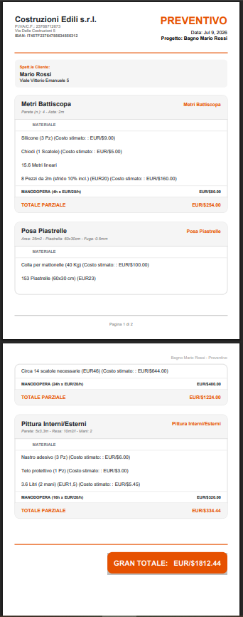

Immagine Professionale
Firma i preventivi col tuo Logo Aziendale
Presentati ai clienti con un documento impeccabile. Configura una sola volta i tuoi dati nella scheda Azienda e genera preventivi in formato PDF A4 o fogli di calcolo Excel (.xlsx) pronti da inviare su WhatsApp o via Email.
- Intestazione Completa: Logo aziendale, Ragione Sociale, Partita IVA / C.F., Indirizzo Sede e codice IBAN per i bonifici.
- Riquadro Cliente & Stanze: Dati del committente e suddivisione chiara di ogni lavorazione con subtotali e Gran Totale.
- Export Doppio Formato: PDF formattato per il cliente finale ed Excel strutturato per la tua contabilità su PC.

